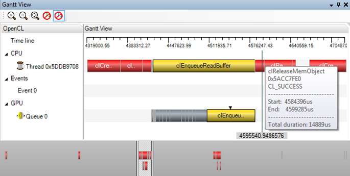

Gantt View
Timeline representation of execution.
Screenshot

Controls
- Single mouse click API call to select item
- Double click API call to focus view on it
- Mouse scroll for zoom in/out
- Right click drag to create a selection region to zoom into
- Left click drag to pan sideways.
Components
- Zoom controls(zoom in, out and reset zoom)
- Enable arrows connecting CPU and GPU execution for each call
- Enable arrows connecting events and API calls
- Event creation, waiting and completion gantt line
- Timeline ruler in microseconds
- Overview